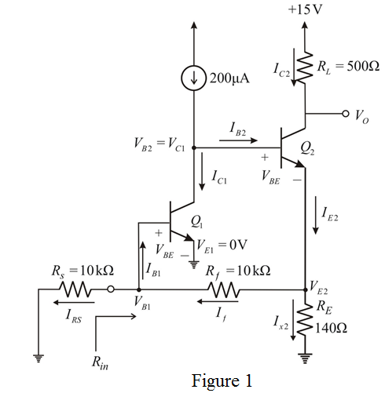
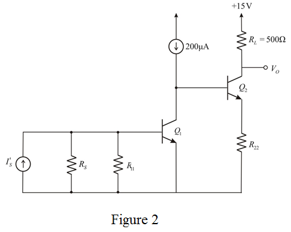

Step 1:
Refer to the circuit diagram of amplifier circuit in Figure P10.69 in the textbook.
Assume that VS has zero dc components and the circuit can be represented as shown in Figure 1.

Step 2:
From Figure1, the voltage at emitter of transistor  is
is .
.
The current flow through the emitter terminal of transistor  is
is .
.
Collector current of the transistor  is,
is,
The voltage at base to emitter is,
The voltage at base to emitter of transistor  is,
is,
Thus, the voltage at base of transistor  is.
is.
Step 3:
Find current flows through resistor RS is,
Therefore, the current flow through resistor is.
Step 4:
Base current of the transistor can be expressed as,
 .
.
The base current is,
Therefore base current  of transistor is
of transistor is
Step 5:
Apply Kirchhoff’s current low at node .
Therefore, current flow through the resistor 
Find emitter voltage of .
.
Thus, emitter voltage of transistor is.
Find base voltage of .
Thus, base voltage of transistor  is.
is.
Step 6:
The current is,
Thus, the current is .
Step 7:
Apply Kirchhoff’s current law at node
Thus, current  flow through emitter of transistor
flow through emitter of transistor  is.
is.
Step 8:
Now obtain the collector current
Thus, collector current  is.
is.
Step 9:
Output voltage V0 is,
Thus, output voltage  of the circuit is.
of the circuit is.
Step 10:
Draw A-circuit for the amplifier circuit.

Step 11:
The output voltage is expressed as,
Substitute known values in the equation.
Find the feedback factor .
.
Here,
Thus, feedback factor  of the amplifier is.
of the amplifier is.
Step 12:
Use the following equation to find the voltage VB1:
 .
.
Substitute 1100 for  in the equation.
in the equation.
Simplify further.
Thus voltage  at base is.
at base is.
Step 13:
Calculate gain of the amplifier
.
From the circuit, gain can be expressed as,
Substitute 100 for  in the equation.
in the equation.
Thus, gain of the amplifier  is.
is.
Step 14:
Define closed loop gain.
Substitute corresponding values.
Thus, closed loop gain  is .
is .
Step 15:
Voltage gain of the amplifier is,
Substitute corresponding values.
Thus, voltage gain of the amplifier is .
Define closed loop input resistance of the feedback amplifier .
.
We know that  is the parallel combination of and .
is the parallel combination of and .
Substitute for ,  for and for
for and for  in the equation.
in the equation.
Thus, input resistance of the feedback amplifier is .
Step 16:
Input resistance seen through the source resistor of the amplifier is,
.
Simplify further.
Substitute for and for .

Thus, input resistance seen through the source  is .
is .